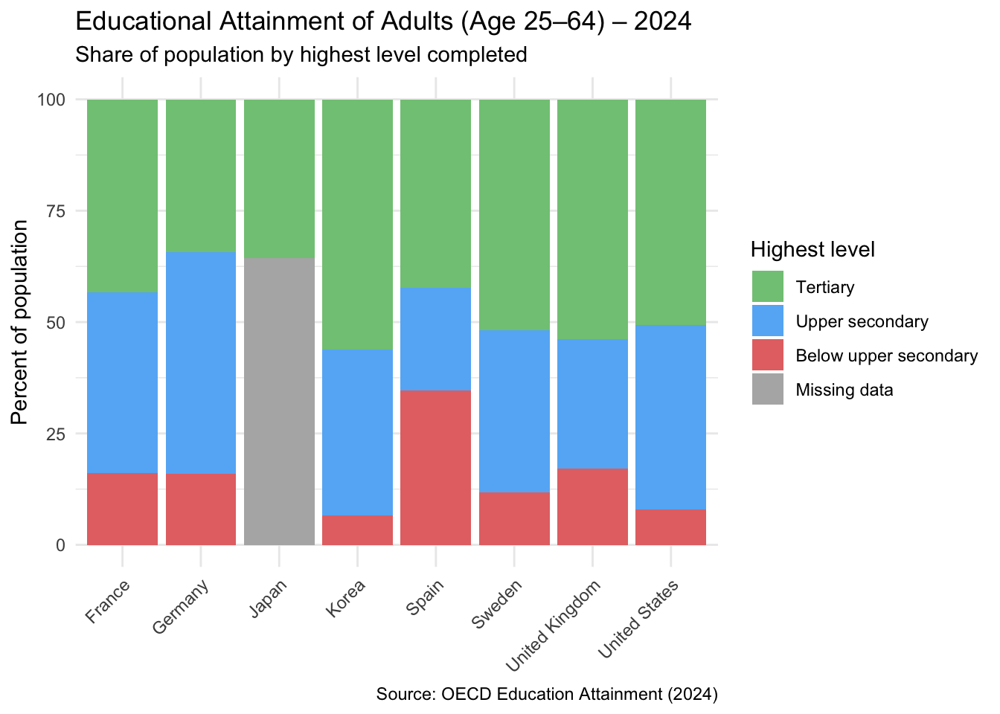

library(tidyverse)
library(readxl)
#Read the file
url_attain <- "https://raw.githubusercontent.com/siy8715-tech/PBA_Final_project/1a085025d6ec250ad6e81aa8da3816e7ebc73a79/data/attainment_2023.xlsx"
temp <- tempfile(fileext = ".xlsx")
download.file(url_attain, temp, mode = "wb")
attainment_raw <- read_excel(temp, skip = 7)
#Rename the needed columns
attainment_clean <- attainment_raw %>%
select(
Country = `Educational attainment level...1`,
Year = `Educational attainment level...2`,
`Below upper secondary education`,
`Upper secondary or post-secondary non-tertiary education`,
`Tertiary education`
) %>%
filter(!Country %in% c("Reference area", "Time period: 2024", NA))
#Make numeric
attainment_clean <- attainment_clean %>%
mutate(across(
c(`Below upper secondary education`,
`Upper secondary or post-secondary non-tertiary education`,
`Tertiary education`),
~ readr::parse_number(as.character(.))
))
#Keep 8 countries
my_countries <- c("France","Germany","Japan","Korea","Spain","Sweden","United Kingdom","United States")
attainment_long <- attainment_clean %>%
filter(Country %in% my_countries) %>%
pivot_longer(
cols = c(
`Below upper secondary education`,
`Upper secondary or post-secondary non-tertiary education`,
`Tertiary education`
),
names_to = "Education_Level",
values_to = "Percent"
) %>%
mutate(
Education_Level = recode(Education_Level,
"Below upper secondary education" = "Below upper secondary",
"Upper secondary or post-secondary non-tertiary education" = "Upper secondary",
"Tertiary education" = "Tertiary"
)
)
attainment_with_totals <- attainment_long %>%
group_by(Country) %>%
mutate(total = sum(Percent, na.rm = TRUE)) %>%
ungroup()
missing_fill <- attainment_with_totals %>%
group_by(Country) %>%
summarise(Missing = 100 - sum(Percent, na.rm = TRUE), .groups = "drop") %>%
filter(Missing > 0) %>%
transmute(Country, Education_Level = "Missing data", Percent = Missing)
attainment_final <- attainment_with_totals %>%
select(Country, Education_Level, Percent) %>%
bind_rows(missing_fill) %>%
# ---- This controls STACK order (bottom -> top) ----
mutate(
Education_Level = factor(
Education_Level,
levels = c("Tertiary", "Upper secondary", "Below upper secondary", "Missing data")
))
ggplot(attainment_final, aes(x = Country, y = Percent, fill = Education_Level)) +
geom_col() +
labs(
title = "Educational Attainment of Adults (Age 25–64) – 2024",
subtitle = "Share of population by highest level completed",
x = NULL,
y = "Percent of population",
fill = "Highest level",
caption = "Source: OECD Education Attainment (2024)"
) +
scale_fill_manual(
breaks = c("Tertiary", "Upper secondary", "Below upper secondary", "Missing data"),
values = c(
"Below upper secondary" = "#E57373",
"Upper secondary" = "#64B5F6",
"Tertiary" = "#81C784",
"Missing data" = "grey70"
)
) +
theme_minimal() +
theme(
axis.text.x = element_text(angle = 45, hjust = 1),
legend.position = "right"
)